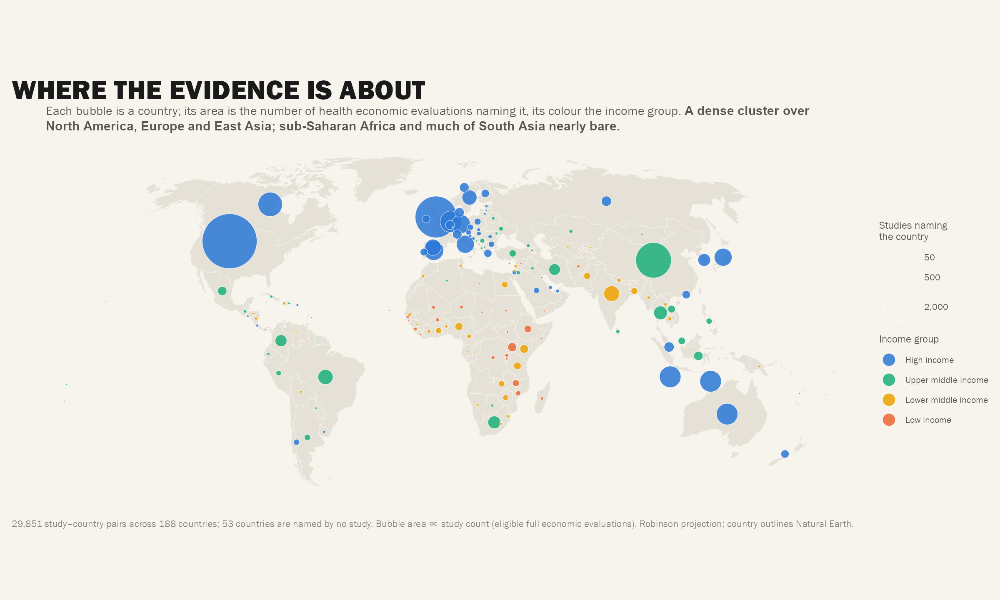
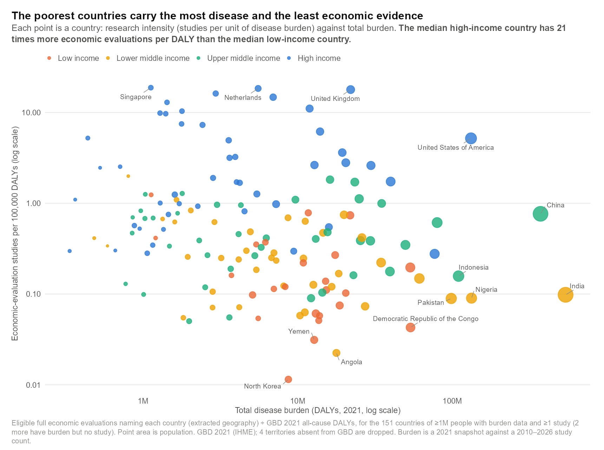
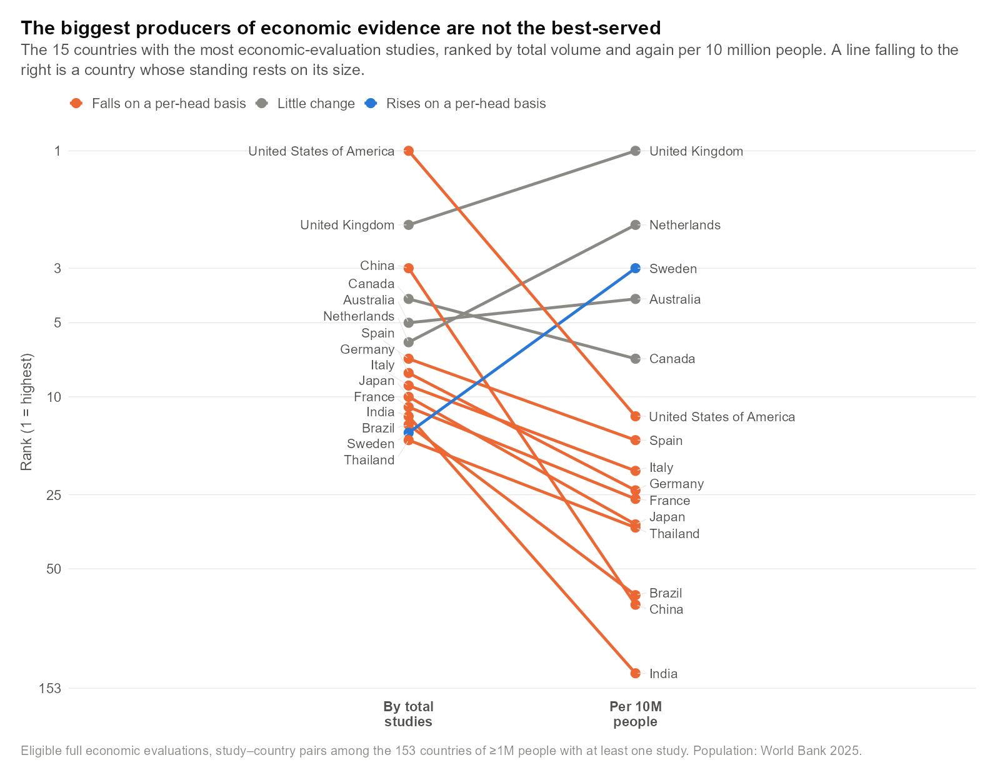
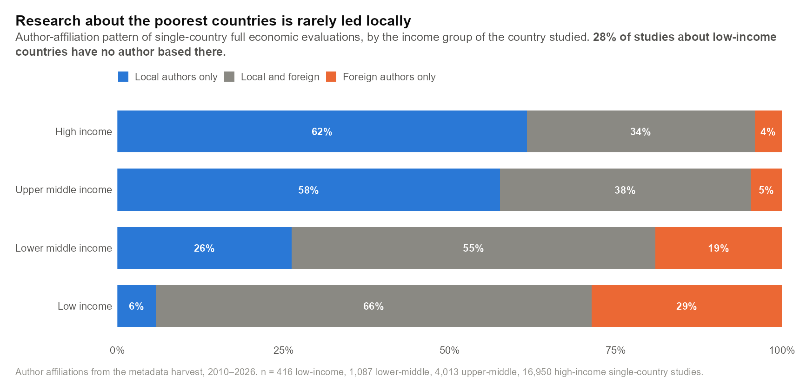
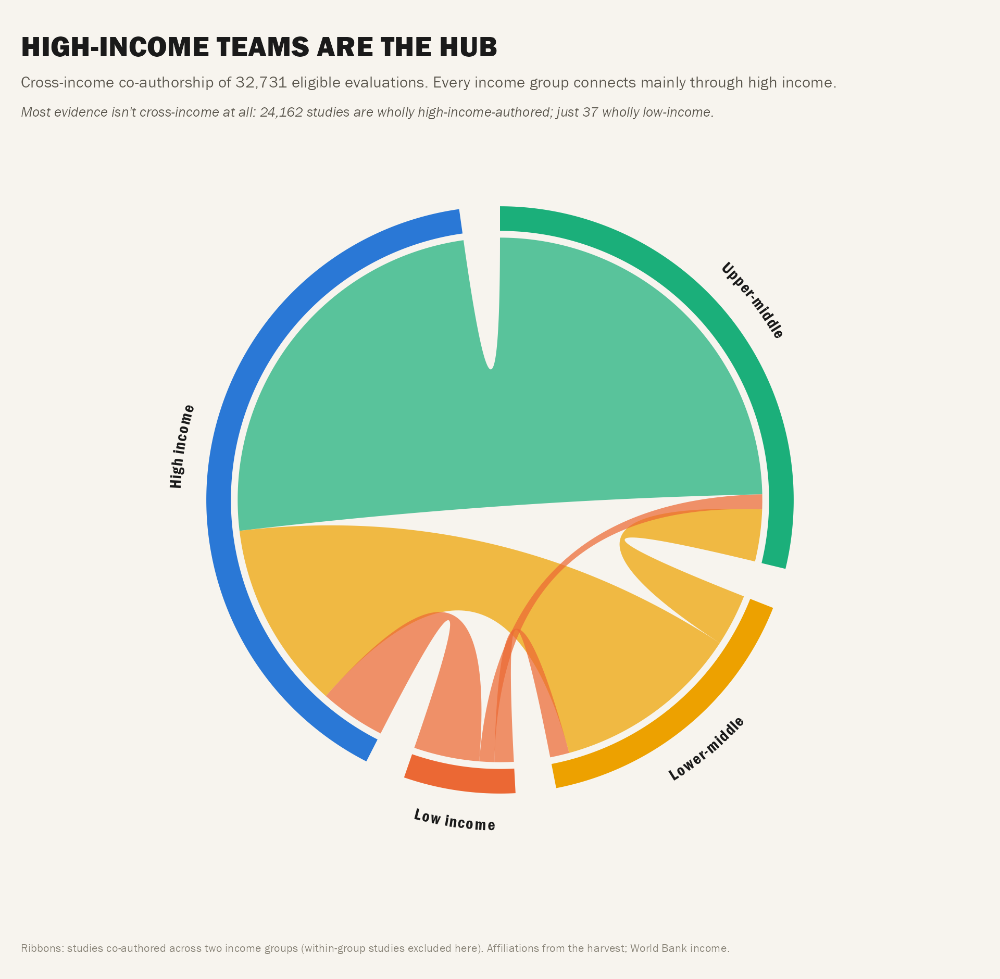
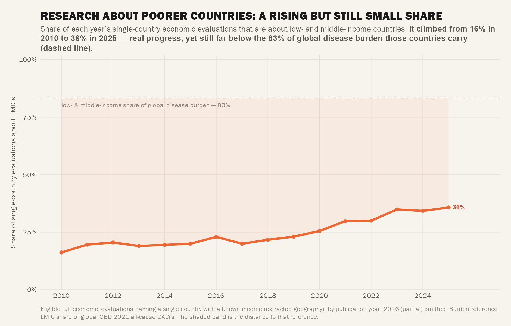
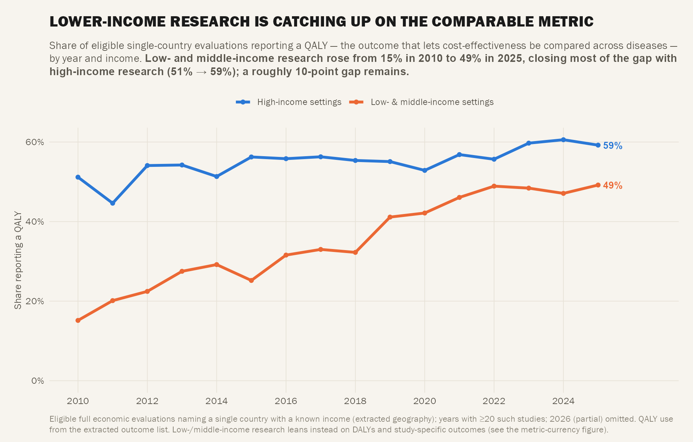
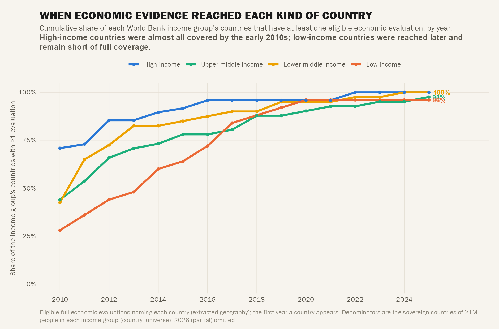

Act IV — Geography & Authorship
Act IV: Geography & Authorship
Where is the research about, and who produces it? Variables: country (190), income, UN region, multi_country; affiliation country + institution. Extracted-geo only for income comparisons (audit finding 17).

C15 — Global Proportional-Symbol Map
<span class="figure-badge badge-hero">★★★ Hero</span>
<span class="figure-script">R/fig-companion-dotmap.R</span>
Berrang-Ford style dot map: country counts, bubbles by income, Robinson projection. Where is the evidence on a map?
Evidence concentrated in North America, Western Europe, East Asia. Africa and South Asia visible but sparse. Dot size = study count, colour = income.
<button class="review-vote-btn vote-btn" data-vote="essential">Essential</button>
<button class="review-vote-btn vote-btn" data-vote="useful">Useful</button>
<button class="review-vote-btn vote-btn" data-vote="nice">Nice to have</button>
<button class="review-vote-btn vote-btn" data-vote="skip">Skip</button>
<button class="review-vote-btn vote-btn" data-vote="up">👍 Up</button>
<button class="review-vote-btn vote-btn" data-vote="down">👎 Down</button>
C16 — Density Within & Between Income Groups
<span class="figure-badge badge-hero">★★★ Hero</span>
<span class="figure-script">R/fig-burden-mismatch.R (paper fig 3)</span>
Studies per capita × income, dot strip. Is the gap between income groups, or within them?
Both: between-group gap is large (17.8× median), but within-group spread (50–141×) dwarfs between-group spread. Some LMICs outperform many HICs.
<button class="review-vote-btn vote-btn" data-vote="essential">Essential</button>
<button class="review-vote-btn vote-btn" data-vote="useful">Useful</button>
<button class="review-vote-btn vote-btn" data-vote="nice">Nice to have</button>
<button class="review-vote-btn vote-btn" data-vote="skip">Skip</button>
<button class="review-vote-btn vote-btn" data-vote="up">👍 Up</button>
<button class="review-vote-btn vote-btn" data-vote="down">👎 Down</button>
C17 — Top Producers: Volume vs Per-Capita
<span class="figure-badge badge-solid">★★ Solid</span>
<span class="figure-script">R/fig-top-producers.R</span>
Two-rank slope chart (log axis): who leads by count vs by output per person.
USA/UK/China lead by volume; small wealthy countries (Netherlands, Sweden, Switzerland) lead per-capita. Different leaders for different metrics.
<button class="review-vote-btn vote-btn" data-vote="essential">Essential</button>
<button class="review-vote-btn vote-btn" data-vote="useful">Useful</button>
<button class="review-vote-btn vote-btn" data-vote="nice">Nice to have</button>
<button class="review-vote-btn vote-btn" data-vote="skip">Skip</button>
<button class="review-vote-btn vote-btn" data-vote="up">👍 Up</button>
<button class="review-vote-btn vote-btn" data-vote="down">👎 Down</button>
C18 — Who Leads Research About Each Setting
<span class="figure-badge badge-hero">★★★ Hero</span>
<span class="figure-script">R/fig-authorship-pattern.R</span>
Stacked bars: local only / local+foreign / foreign only, by income group of country studied. Extracted geography only.
28% of low-income country studies have NO local author. Foreign-only dominates LIC; HIC research is mostly local. Parachute research visible in the data.
<button class="review-vote-btn vote-btn" data-vote="essential">Essential</button>
<button class="review-vote-btn vote-btn" data-vote="useful">Useful</button>
<button class="review-vote-btn vote-btn" data-vote="nice">Nice to have</button>
<button class="review-vote-btn vote-btn" data-vote="skip">Skip</button>
<button class="review-vote-btn vote-btn" data-vote="up">👍 Up</button>
<button class="review-vote-btn vote-btn" data-vote="down">👎 Down</button>
C19 — Income-Group Collaboration Structure (Chord)
<span class="figure-badge badge-solid">★★ Solid</span>
<span class="figure-script">R/fig-companion-collab.R</span>
Chord diagram: cross-income co-authorship of 32,731 eligible studies. Self-loops (within-group) excluded from ribbons.
High-income teams are the hub. 24,162 wholly HIC studies vs 37 wholly LIC. Every income group connects mainly through HIC. Cross-income collaboration is HIC-mediated.
<button class="review-vote-btn vote-btn" data-vote="essential">Essential</button>
<button class="review-vote-btn vote-btn" data-vote="useful">Useful</button>
<button class="review-vote-btn vote-btn" data-vote="nice">Nice to have</button>
<button class="review-vote-btn vote-btn" data-vote="skip">Skip</button>
<button class="review-vote-btn vote-btn" data-vote="up">👍 Up</button>
<button class="review-vote-btn vote-btn" data-vote="down">👎 Down</button>
T1 — Equity Over Time
<span class="figure-badge badge-timeline">Timeline</span>
<span class="figure-script">R/fig-companion-equity-time.R</span>
LMIC share of annual single-country output vs their burden share (2010–2025). Is research attention shifting toward need?
Rose 16% → 36% (2010→2025) — real progress, yet still far below 83% LMIC burden share (dashed line). Shaded band = distance to burden-proportional reference.
<button class="review-vote-btn vote-btn" data-vote="essential">Essential</button>
<button class="review-vote-btn vote-btn" data-vote="useful">Useful</button>
<button class="review-vote-btn vote-btn" data-vote="nice">Nice to have</button>
<button class="review-vote-btn vote-btn" data-vote="skip">Skip</button>
<button class="review-vote-btn vote-btn" data-vote="up">👍 Up</button>
<button class="review-vote-btn vote-btn" data-vote="down">👎 Down</button>
T2 — QALY-Metric Convergence by Income
<span class="figure-badge badge-timeline">Timeline</span>
<span class="figure-script">R/fig-companion-qaly-time.R</span>
QALY use by income group over time. The metric gap over time.
LMIC 15% → 49% vs HIC 51% → 59% (2010→2025). Gap narrowed ~10pp but persists. LMIC catching up on comparable metric adoption.
<button class="review-vote-btn vote-btn" data-vote="essential">Essential</button>
<button class="review-vote-btn vote-btn" data-vote="useful">Useful</button>
<button class="review-vote-btn vote-btn" data-vote="nice">Nice to have</button>
<button class="review-vote-btn vote-btn" data-vote="skip">Skip</button>
<button class="review-vote-btn vote-btn" data-vote="up">👍 Up</button>
<button class="review-vote-btn vote-btn" data-vote="down">👎 Down</button>
T3 — Reach Over Time
<span class="figure-badge badge-timeline">Timeline</span>
<span class="figure-script">R/fig-companion-reach-time.R</span>
Cumulative % of each income group’s countries with ≥1 evaluation. Country universe denominators per income group.
HIC covered early; LIC reached last (28% → 96%). Geographic reach expanding but uneven — LIC coverage only recently approaching saturation.
<button class="review-vote-btn vote-btn" data-vote="essential">Essential</button>
<button class="review-vote-btn vote-btn" data-vote="useful">Useful</button>
<button class="review-vote-btn vote-btn" data-vote="nice">Nice to have</button>
<button class="review-vote-btn vote-btn" data-vote="skip">Skip</button>
<button class="review-vote-btn vote-btn" data-vote="up">👍 Up</button>
<button class="review-vote-btn vote-btn" data-vote="down">👎 Down</button>Act IV Summary
| Figure | Status | Strength | Key Message |
|---|---|---|---|
| C15 | ✅ Built | ★★★ Hero | Dot map: evidence clustered in HIC regions |
| C16 | ✅ Built | ★★★ Hero | Within-group spread > between-group gap |
| C17 | ✅ Built | ★★ | Volume leaders ≠ per-capita leaders |
| C18 | ✅ Built | ★★★ Hero | 28% LIC studies: no local author |
| C19 | ✅ Built | ★★ Solid | Chord: HIC is the collaboration hub |
| C20 | 🛠️ Buildable | ★★ | Institutions producing LMIC evidence (needs harvest) |
| T1 | ✅ Built | Timeline | LMIC share 16→36% vs 83% burden share |
| T2 | ✅ Built | Timeline | QALY gap narrowed ~10pp (15→49% vs 51→59%) |
| T3 | ✅ Built | Timeline | LIC country reach 28→96% (last to saturate) |
Previous: ← Act III: Methods & Quality • Next: Act V: Gaps vs Burden →